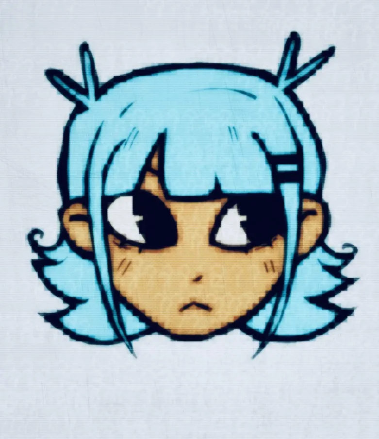
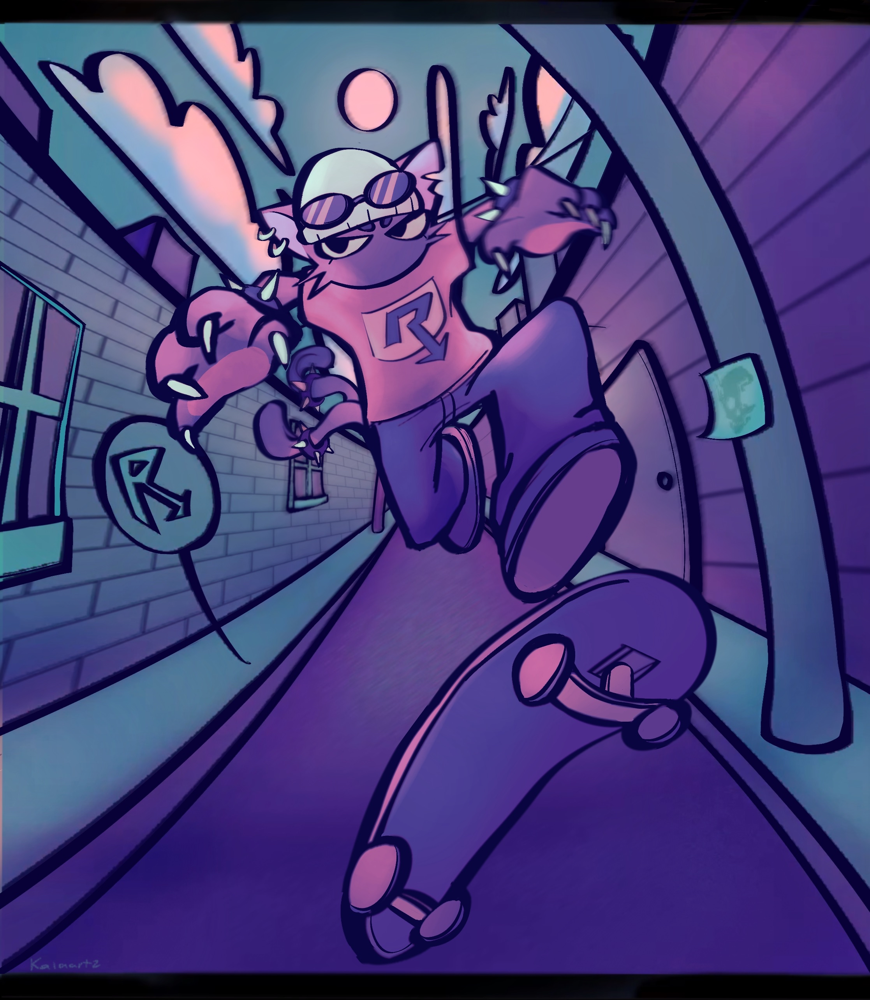

kaiaradio
I'm a Nintendo-inspired composer who aims to compose various genres including jazz fusion, shibuya-kei and more! I also make art for my projects and for others sometimes :-)




I'm a Nintendo-inspired composer who aims to compose various genres including jazz fusion, shibuya-kei and more! I also make art for my projects and for others sometimes :-)

